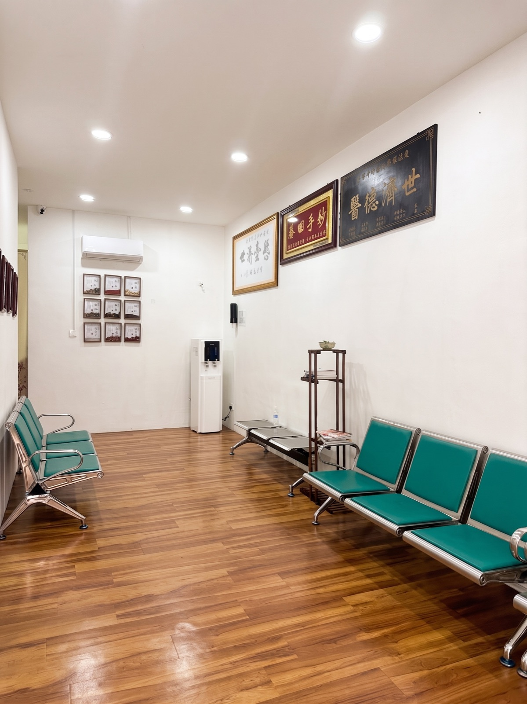
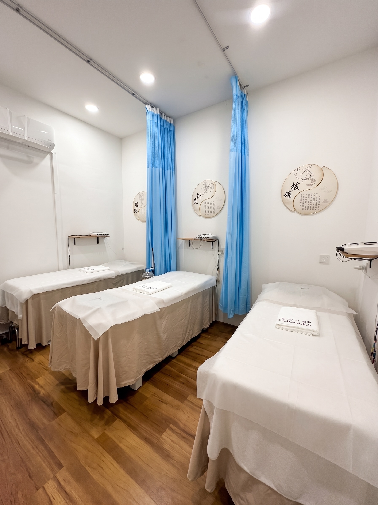
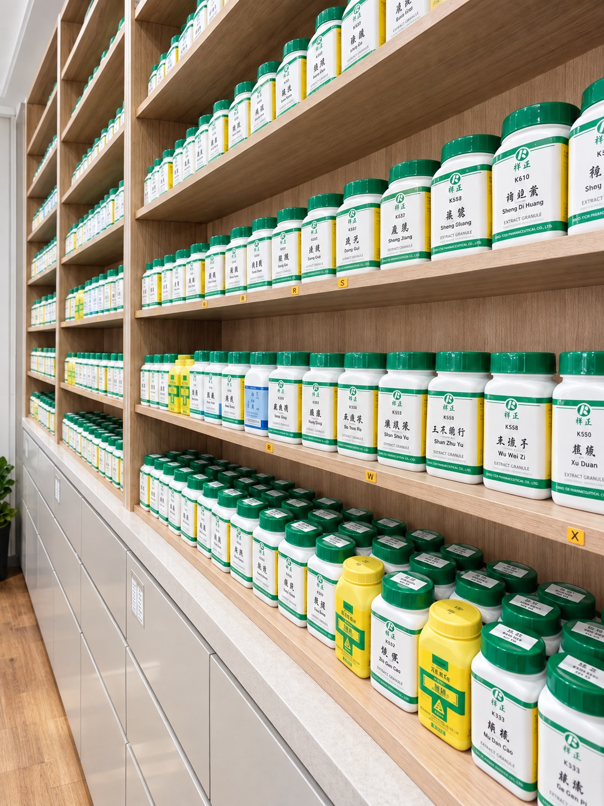
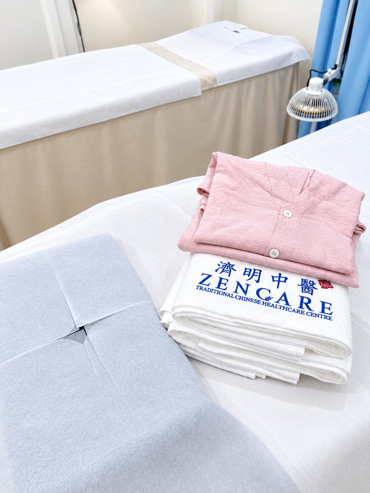
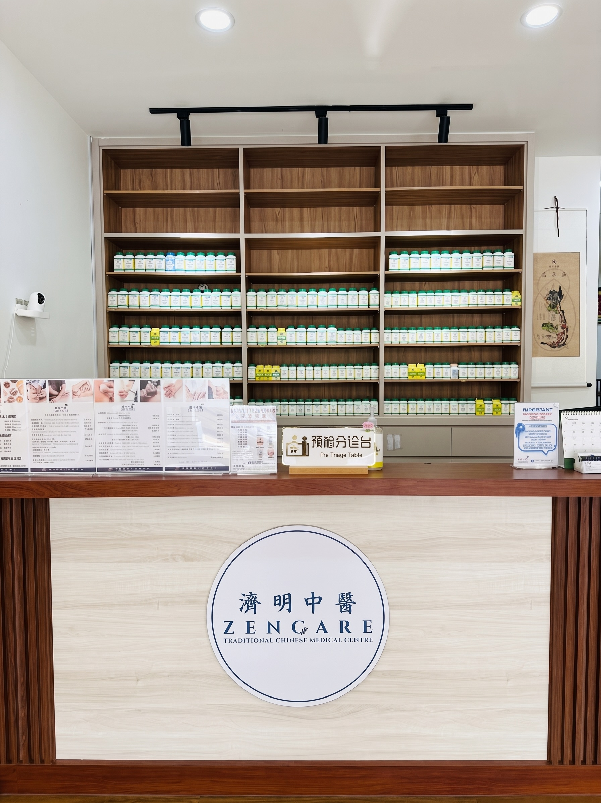

麻坡东甲·武吉甘蜜 Bukit Gambir 第一的中医诊疗中心
Tangkak, Bukit Gambir's Leading Traditional Chinese Medicine Clinic
承百年医道之精粹，融现代诊疗之严谨。以望闻问切，细察四时之变，陪您找回身心平衡。
A century of traditional Chinese medicine, combined with modern care. We take the time to really listen and understand you — helping you feel balanced again, in body and mind.
济明中医 ZenCare TCM
ZenCare TCM
「济」是渡人以善，「明」是察病于微。济明中医成立以来，秉持这份初心， 将传统中医的辨证论治，与现代诊疗的严谨态度结合，为每一位前来的患者， 找出最适合的调养方式。
"Zen" means to help others with kindness; "Care" means to see illness clearly, even in its earliest signs. Since our founding, ZenCare TCM has held true to this belief — combining traditional TCM diagnosis with the rigor of modern clinical care to find the right path to wellness for every patient who walks through our doors.
我们的承诺
Our Promise
济明中医坚持以患者为中心，提供安全、透明、安心的诊疗环境，让您放心调理，无后顾之忧。
ZenCare TCM is committed to patient-centered care — a safe, transparent, reassuring environment so you can focus on healing with complete peace of mind.
No Hidden Fees
费用公开透明，所有诊疗项目与收费明细在诊前清楚告知，绝无任何隐藏收费，让您安心就诊。
All treatment costs and fees are clearly disclosed before your visit — no hidden charges, ever.
No Steroids / Western Drugs
坚持纯中医诊疗，100%不含类固醇或其他西药添加物，以正统草药与针灸调理，回归自然疗法。
We practice authentic TCM only — 100% free of steroids or western drug additives. Herbal medicine and acupuncture, the natural way.
Safe & Hygienic
每次诊疗使用一次性床单与一次性针具，严格消毒流程，提供安全、舒适、卫生的就诊环境。
Single-use sheets and needles for every session, with strict sterilization protocols — a safe, comfortable, hygienic clinical environment.
诊疗项目
Our Specialties
济明中医以传统中医辨证为本，提供针灸正骨伤科、内科体质调理、妇儿科三大专科服务，依不同年龄、体质与需求，为您量身打造最合适的诊疗方案。
Grounded in classical TCM diagnosis, ZenCare TCM offers three core specialties — Acupuncture & Orthopedics, Internal Medicine, and Gynecology & Pediatrics — tailored to your age, constitution and needs.
Acupuncture & Orthopedics
结合传统针灸与结构复位手法，精准定位疼痛与功能受限的根源。我们不仅为您解除神经压迫与局部发炎状态，恢复筋骨结构的力学平衡，更透过深层针灸刺激促进神经传导与微循环，安全、有效地恢复身体的自然活动力。
Combining traditional acupuncture with structural realignment techniques to precisely locate the root of pain and restricted movement. We relieve nerve compression and localized inflammation, restore mechanical balance to bones and muscles, and stimulate nerve conduction and micro-circulation through deep acupuncture — safely and effectively restoring your body's natural mobility.
Internal Medicine
望闻问切，四诊合参 的诊断精髓。针对三高问题、肠胃失调及免疫内科等长期困扰，为您量身定制根本性的体质调理方案。通过改善消化与代谢机能，清除体内湿气与炎症因子，从内而外唤醒身体自愈力，彻底告别亚健康状态。
Rooted in the four diagnostic methods — observation, listening, inquiry and pulse-taking. For chronic concerns like hypertension, diabetes, digestive imbalance and immune issues, we design a root-cause constitutional treatment plan. By improving digestion and metabolism and clearing dampness and inflammation, we awaken your body's self-healing ability from within.
Gynecology & Pediatrics
专注女性各阶段的生理健康与儿童的生长发育。以温和无副作用的中医疗法，调顺女性气血周期，平衡内分泌；并为孩子的免疫力与消化系统打下坚实基础，全方位守护母婴与家庭健康。
Dedicated to women's health at every life stage and children's healthy growth. Gentle, side-effect-free TCM therapies regulate the menstrual cycle and balance hormones, while building a strong foundation for children's immunity and digestion.
诊所空间
Our Clinic

候诊区Waiting Area
诊疗室Treatment Room
药材陈列Herbal Display
针灸室Acupuncture Room
柜台 / 入口Reception / Entrance「失眠困扰在第一次治疗后就改善了，膝盖旧伤经过4次疗程也明显好转。」
"My insomnia improved after just one treatment, and my old knee injury noticeably improved after 4 sessions."
「医师和员工都非常专业，会耐心解释疗程，效果确实显著。」
"Very professional — the doctors take time to explain everything clearly, and the results have been truly effective."
「环境舒适，医师专业，困扰已久的腰痛3次疗程就大幅改善！」
"Great environment, very professional physician — my chronic back pain improved within just 3 sessions!"
「员工亲切细心，环境舒适放松，针灸配合中药调理几次疗程就有明显改善。」
"Friendly, attentive staff in a calming environment — I saw real improvement after just a few sessions of acupuncture and herbal treatment."
「全家人都在这里看诊，效果很好，医师和员工都非常棒。」
"My whole family has been treated here — very effective, and the doctor and staff are excellent."
「我和爸爸都在这里接受了很好的治疗，我原本颈椎有问题、左手发麻，吴医师大大改善了我的状况，非常专业的中医诊所！」
"Me and my dad received well treatment here, I have neck spine problem and numb of my left hand. Dr Goh helped relieve my neck spine problem a lot. Good TCM clinic, doctor is very professional 👍"
「John医师和Ashley医师的医疗服务非常出色！之前看了好几位中医师效果都不明显，来到这里后困扰已久的腰痛终于得到改善，非常感谢他们的专业治疗！」
"Excellent medical service by Dr. John and Dr. Ashley! They successfully helped resolve my backache after I had visited several TCM practitioners without much improvement. I'm very grateful for their professional treatment. Keep up the great work! 👍"
门诊资讯
Clinic Info
| 周一Monday | 9:30 AM – 1:00 PM |
|---|---|
| 周二Tuesday | 休诊Closed |
| 周三 – 周日Wed – Sun | 9:30 AM – 5:30 PM |
＊实际看诊时间请以现场公告或来电确认为准。
*Please call ahead or check on-site notices to confirm actual clinic hours.
立即致电预约Call to Book13, Jalan Perdagangan 4, Pusat Perdagangan Bukit Gambir,
Bukit Gambir, 84800 Tangkak, Johor Darul Ta'zim